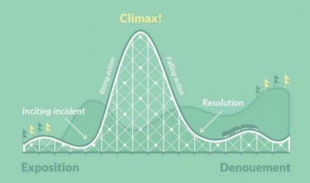

<!doctype html>
<html>
	<head>
		<meta charset="utf-8">
		<meta name="viewport" content="width=device-width, initial-scale=1.0, maximum-scale=1.0, user-scalable=no">

		<title>reveal.js</title>

		<link rel="stylesheet" href="css/reveal.css">
		<link rel="stylesheet" href="css/theme/black.css">

		<!-- Theme used for syntax highlighting of code -->
		<link rel="stylesheet" href="lib/css/zenburn.css">

		<!-- Printing and PDF exports -->
		<script>
			var link = document.createElement( 'link' );
			link.rel = 'stylesheet';
			link.type = 'text/css';
			link.href = window.location.search.match( /print-pdf/gi ) ? 'css/print/pdf.css' : 'css/print/paper.css';
			document.getElementsByTagName( 'head' )[0].appendChild( link );
		</script>
	</head>
	<body>
		<div class="reveal">
			<div class="slides">

				<!-- 
					Interactive Part:
						- About to construct a presentation together.
						- What does every good presentation need?
							- Title Slide
						- What is the most important slide?
							- Introductions. About the speaker, clearly!
						- When trying to explain a (potentially complex topic) I prefer to tell a narrative. Bring the user along for the story.
							Not too dissimilar from iBRAIN, the 
							- Exposition
							- Rising Action
							- Climax
							- Falling Action
								- Setback
								- Overcoming setbacks, presenting plan to win
							- Denouement
						- Don't lose the point. Close with it.
				-->

				<!-- <section>
					<h2>Title</h2>
				</section>

				<section>
					<h2>Introductions</h2>
				</section>

				<section>
					<h2>Story Arc</h2>
					
				</section>

				<section>
					<h2>Exposition</h2>
					<aside class="notes">
						Build up a backstory and the moral compass of the character.
					</aside>
				</section>

				<section>
					<h2>Rising Action</h2>
					
					<aside class="notes">
							Conflict is introduced.
						</aside>	
					</section>

				<section>
					<h2>Climax</h2>
					<h3 class="fragment fade-up">This page left intentionally blank</h3>
				</section>
	
				<section>
					<h2>Falling Action</h2>
					<h3 class="fragment fade-up">A choice...</h3>
					<h3 class="fragment fade-up">Research and training</h3>
				</section>
	
				<section>
					<h2>A setback</h2>
					
				</section>

				<section>Overcoming setbacks and presenting the plan that will win</section>
	
				<section>Denouement</section> -->


				<!-- Real Deal below. -->
				<!-- <section>
					<h2>Effective Presentations</h2>
					<p class="fragment fade-up">Reminder: Come up with a better title (later)</p>
				</section>

				<section>
					<h2>Introductions</h2>
				</section>
	
				<section>
					<aside class="notes">Exposition</aside>
					<h2>One year ago...</h2>
					<aside class="notes">I was standing on this same stage giving a demo of a good presentation.
						I stepped off the stage knowing that I would be coming back in a year to give another demo.
						This meant I had an entire year to work on what would be my latest masterpiece.
						Without further ado, I present to you: 
					</aside>
				</section>

				<section>
					<aside class="notes">Climax</aside>
					<p>This page left (un)intentionally blank</p>
					<p class="fragment fade-up"><sub>...even tho it isn't blank</sub></p>
					<aside class="notes">What happened? I had an entire year to work on this. I have to share with you all that I have a terribly debilitating affliction.</aside>
				</section>

				<section>
					<aside class="notes">Rising Action</aside>
					
					<aside class="notes">I have stage 4 procrastionation.</aside>
				</section>
			
				<section>
					<h2>Choices</h2>
					<aside class="notes">Falling Action</aside>
					<aside class="notes">
						We are all faced with decisions in life that define and refine our character.
						I could run away from the problem or I could fight it. I chose..
					</aside>
				</section>

				<section>
					<h2>Fight!</h2>
					<aside class="notes">
						Clearly I needed to stop procrastinating and get to work. To help me focus on writing this presentation I turned to research.
					</aside>
					<p class="fragment fade-up"></p>
					<p class="fragment fade-up">About 5,000,000 results (0.43 seconds)</p>
				</section>

				<section>
					<aside class="notes">Interestingly enough, did you know that there are at least 7 Ted talks on the topic.</aside>
					
				</section>
	
				<section>
					<aside class="notes">I'd like to share some of the insight that I gleaned from some of the most reputable sources:</aside>
					<h2>Procrastinators</h2>
					<section>(according to r/showerthoughts)</section>
					<section>are hated by everyone, but everyone loves procrastinating.</section>
					<section>still get stuff done. Reaffirming why we procrastinate.</section>
					<section>procrastinate ending procrastinary habits.</section>
					<section>current selves expect a lot from their future selves.</section>
					<section>future selves hate past selves for leaving everything to be done.</section>
					<section>are safe from suicide.</section>
					<section>finish a 30 minute job in 8 hours.</section>
					<section>...and, finish an 8 hour job in 30 minutes.</section>
				</section>
	
				<section>
					<h2>Which brings us to present day...</h2>
					<p class="fragment fade-up">This page <i>still</i> left (un)intentionally blank</p>
					<p class="fragment fade-up">¯\_(ツ)_/¯</p>
					<aside class="notes">
						I had reached rock bottom.. I had nothing to present, but then as the 11th hour came about I had a spark of insight.
					</aside>
				</section>

				<section>
					<aside class="notes">Climax</aside>
					<h2>Misdiagnosis</h2>
					<aside class="notes">
						Just like many of your 'Problem Statements' from this week.
						I had made assumptions.
						I realized I was asking the wrong questions.
						I was looking for a way to fix something that wasn't broken.
						I learned that there are two types of procrastinators. 
					</aside>
				</section>
	
				<section>
					<h2>Passive Procrastinators:</h2>
					<section>suffer from high stress levels.</section>
					<aside class="notes">No such thing as blissful ignorance.</aside>
					<section>get caught off guard.</section>
					<aside class="notes">They may not realize how much work really needs to be done and ignore the clues until it is too late.</aside>
					<section>This slide omitted. (I ran out of time)</section>
				</section>

				<section>
					<h2>Active Procrastinators:</h2>
					<section>make better decisions.</section>
					<aside class="notes">Decisions made at last responsible minute. Gathering and processing information, and weighing possible outcomes of their choice.</aside>
					<section>have increased insight.</section>
					<aside class="notes">Easier to identified necessary vs 'Busy Work'.</aside>
					<section>have have fewer unecessary tasks.</section>
					<aside class="notes">No time left for 'Busy Work'.</aside>
					<section>have increased levels of creativity.</section>
					<aside class="notes">Big thinkers. May lead to the invention of a better way to accomplish something. Panic monster kicks in adrenaline leading to increased brain activity and creativity.</aside>
				</section>

				<section>
					<h2>Presentations are due...</h2>
					<div class="fragment fade-up">
					<p>...but not until tomorrow. 
						<br/>
						<br/><p style="font-size: medium;">Because screw that future self, he is a shmuck!</p>
					</p>
					</div>
				</section>

				<section>
					<h2>tomorrow</h2>
					<p><i>(noun)</i></p>
					<p>a mystical land where 99% of all human productivity, motivation and achievement is stored.</p>
					<aside class="notes">
						Don't be ashamed of being a procrastinator. 
						Make a choice to be an active procrastinator. 
					</aside>
				</section> -->
			</div>
		</div>

		<script src="lib/js/head.min.js"></script>
		<script src="js/reveal.js"></script>

		<script>
			// More info about config & dependencies:
			// - https://github.com/hakimel/reveal.js#configuration
			// - https://github.com/hakimel/reveal.js#dependencies
			Reveal.initialize({
				keyboard: {
					40: 'next',
					38: 'prev'
				},
				dependencies: [
					{ src: 'plugin/markdown/marked.js' },
					{ src: 'plugin/markdown/markdown.js' },
					{ src: 'plugin/notes/notes.js', async: true },
					{ src: 'plugin/highlight/highlight.js', async: true, callback: function() { hljs.initHighlightingOnLoad(); } }
				]
			});
		</script>
	</body>
</html>
